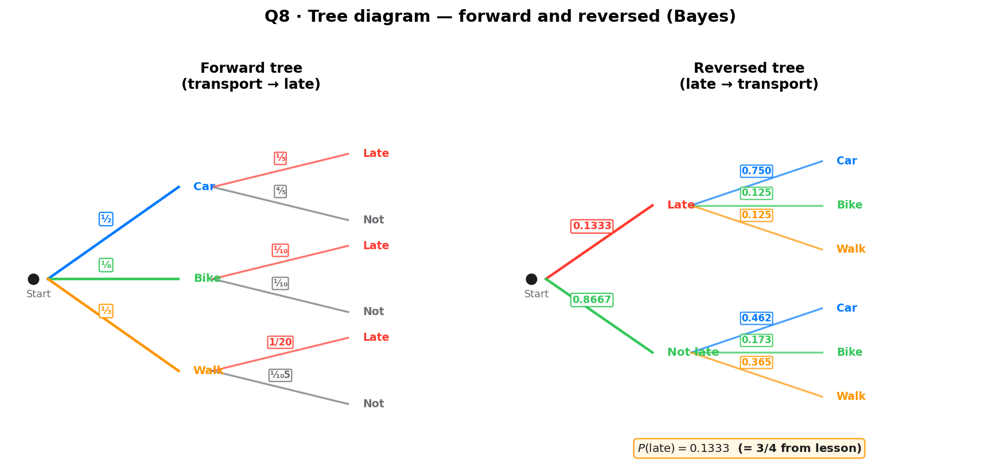

When Paul goes to work he travels by car, by bicycle, or he walks. $\mathrm{P}(\text{car}) = \frac{1}{2}$, $\mathrm{P}(\text{bike}) = \frac{1}{6}$, $\mathrm{P}(\text{walk}) = \frac{1}{3}$. Given he travels by car, $\mathrm{P}(\text{late} \mid \text{car}) = \frac{1}{5}$; by bike, $\mathrm{P}(\text{late} \mid \text{bike}) = \frac{1}{10}$; on foot, $\mathrm{P}(\text{late} \mid \text{walk}) = \frac{1}{20}$.
(A) Find $\mathrm{P}(\text{late})$. (B) Find $\mathrm{P}(\text{car} \mid \text{late})$. (C) Hence draw the reversed tree (late / not late first) and find the remaining probabilities.
[Total: 12 marks]

Strategy. Path probability = $\mathrm{P}(\text{transport}) \times \mathrm{P}(\text{late} \mid \text{transport})$. Use $\mathrm{P}(\text{late} \mid \text{transport})$, NOT $\mathrm{P}(\text{late})$ — independence is not stated.
Three paths to "late"
$$\mathrm{P}(\text{car} \cap \text{late}) = \tfrac{1}{2} \times \tfrac{1}{5} = \tfrac{1}{10} = \tfrac{6}{60}.$$ $$\mathrm{P}(\text{bike} \cap \text{late}) = \tfrac{1}{6} \times \tfrac{1}{10} = \tfrac{1}{60}.$$ $$\mathrm{P}(\text{walk} \cap \text{late}) = \tfrac{1}{3} \times \tfrac{1}{20} = \tfrac{1}{60}.$$Sense check. At every branch point, the children's probabilities sum to 1. Top: $1/2+1/6+1/3=1$ ✓. Car subtree: $1/5+4/5=1$ ✓.
Strategy. "Late" = union of three disjoint paths, so $\mathrm{P}(\text{late})$ = sum of path probabilities.
Sum
$$\mathrm{P}(\text{late}) = \frac{6}{60} + \frac{1}{60} + \frac{1}{60} = \frac{8}{60} = \frac{2}{15}.$$Sense check. $\frac{2}{15} \approx 0.133$ — Paul is late ~13% of the time. Plausible given the low conditional probabilities.
Strategy. Write $\mathrm{P}(\text{car} \mid \text{late}) = \frac{\mathrm{P}(\text{car} \cap \text{late})}{\mathrm{P}(\text{late})}$ on the page before substituting. This earns the method mark and prevents the P(A|B) vs P(A∩B) confusion.
Conditional probability formula
$$\mathrm{P}(\text{car} \mid \text{late}) = \frac{\mathrm{P}(\text{car} \cap \text{late})}{\mathrm{P}(\text{late})}.$$Strategy. Substitute the values from part (A) and simplify the fraction.
Substitute
$$\mathrm{P}(\text{car} \mid \text{late}) = \frac{1/10}{2/15} = \frac{1}{10} \times \frac{15}{2} = \frac{15}{20} = \frac{3}{4}.$$Sense check. $\frac{3}{4} = 0.75$ — given Paul is late, there's a 75% chance he took the car. This is the largest share because car has both the highest prior ($1/2$) and the highest conditional ($1/5$). Makes sense.
Strategy. The first split is late / not late. $\mathrm{P}(\text{late}) = \frac{2}{15}$ (from part A), so $\mathrm{P}(\text{not late}) = 1 - \frac{2}{15} = \frac{13}{15}$.
First level
$$\mathrm{P}(\text{late}) = \frac{2}{15}, \qquad \mathrm{P}(\text{not late}) = \frac{13}{15}.$$Sense check. $\frac{2}{15} + \frac{13}{15} = 1$ ✓ — the first-level children sum to 1.
Strategy. Under "late", the three children are car/bike/walk with conditional probabilities. $\mathrm{P}(\text{car} \mid \text{late}) = \frac{3}{4}$ (from part B). Compute $\mathrm{P}(\text{bike} \mid \text{late})$ and $\mathrm{P}(\text{walk} \mid \text{late})$ using the same reversal formula.
Bike and walk given late
$$\mathrm{P}(\text{bike} \mid \text{late}) = \frac{1/60}{2/15} = \frac{1}{60} \times \frac{15}{2} = \frac{1}{8}.$$ $$\mathrm{P}(\text{walk} \mid \text{late}) = \frac{1/60}{2/15} = \frac{1}{8}.$$Check: $\frac{3}{4} + \frac{1}{8} + \frac{1}{8} = \frac{6+1+1}{8} = 1$ ✓.
Sense check. The three children under "late" sum to 1 ✓ — the tree is valid at this node.
Strategy. Under "not late", reverse using $\mathrm{P}(\text{transport} \mid \text{not late}) = \frac{\mathrm{P}(\text{transport} \cap \text{not late})}{\mathrm{P}(\text{not late})}$. Need the three "not late" path probabilities from the original tree.
Not-late path probabilities
$$\mathrm{P}(\text{car} \cap \text{not late}) = \tfrac{1}{2} \times \tfrac{4}{5} = \tfrac{2}{5}.$$ $$\mathrm{P}(\text{bike} \cap \text{not late}) = \tfrac{1}{6} \times \tfrac{9}{10} = \tfrac{3}{20}.$$ $$\mathrm{P}(\text{walk} \cap \text{not late}) = \tfrac{1}{3} \times \tfrac{19}{20} = \tfrac{19}{60}.$$Conditionals given not late
$$\mathrm{P}(\text{car} \mid \text{not late}) = \frac{2/5}{13/15} = \frac{2}{5} \times \frac{15}{13} = \frac{6}{13}.$$ $$\mathrm{P}(\text{bike} \mid \text{not late}) = \frac{3/20}{13/15} = \frac{3}{20} \times \frac{15}{13} = \frac{9}{52}.$$ $$\mathrm{P}(\text{walk} \mid \text{not late}) = \frac{19/60}{13/15} = \frac{19}{60} \times \frac{15}{13} = \frac{19}{52}.$$Sense check. $\frac{6}{13} + \frac{9}{52} + \frac{19}{52} = \frac{24+9+19}{52} = \frac{52}{52} = 1$ ✓.
Strategy. Draw the reversed tree with late/not late at the first level and car/bike/walk at the second. Verify every node's children sum to 1.
Reversed tree summary